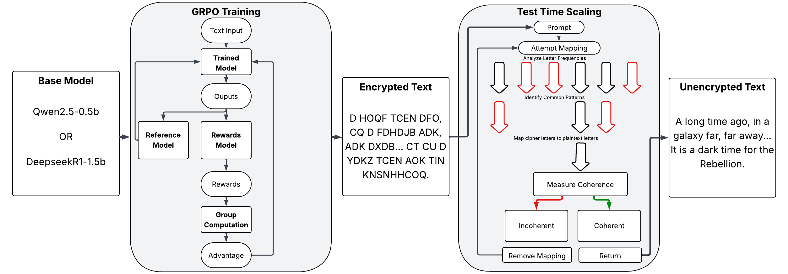
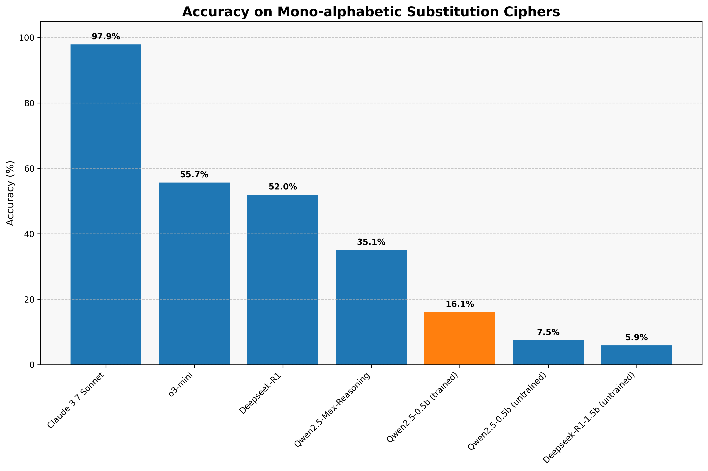

Our project explores the feasibility of using fine-tuned small language models for cryptographic analysis, specifically mono-alphabetic substitution ciphers, to determine whether an LLM can effectively decode messages compared to algorithms or humans. Large language models such as ChatGPT and Deepseek-R1 struggle immensely with this task, despite their extensive knowledge, computational power, and parameters. To investigate this challenge, we fine-tune Qwen2.5-0.5B, a lightweight model with 500 million parameters, as well as DeepseekR1-1.5B with chain-of-thought reasoning and evaluate their performance against larger models. For both models, we implement a feedback system (GRPO) and apply test-time scaling to enhance performance and test with state-of-the-art LLM algorithms for optimal results. Our findings may demonstrate that carefully fine-tuned small models can effectively recognize symbolic patterns in cryptographic text, or alternatively, reveal an inherent limitation in AI systems' current ability to decode monoalphabetic cipher text despite meticulous fine-tuning.

The basic process of both GRPO and Test Time Scaling, heavily inspired by GRPO and Test Time Compute
What did you try to do? What problem did you try to solve? Articulate your objectives using absolutely no jargon.
We sought to develop a small, efficient language model capable of breaking simple substitution ciphers where each letter is consistently replaced by another letter. The problem we're addressing is understanding why current LLMs struggle with cryptographic challenges, and whether targeted training can improve their accuracy in this domain. To achieve this goal, we will evaluate a compact base LLM using state-of-the-art algorithms to determine if it can comprehend and solve these puzzles. If this proves impossible, we intend to identify several explanations for this limitation and understand the fundamental constraints of LLMs in this area.
How is it done today, and what are the limits of current practice?
Current practices primarily rely on fixed statistical methods to identify word patterns and letter frequencies. These algorithms are relatively efficient to process and straightforward to implement, and humans can solve them through methodical trial and error. Although this problem is solvable, our aim is to test an LLM's capacity to replicate this process and determine if it can be trained to understand and solve these puzzles similarly to humans. Current LLMs (including ChatGPT, Qwen, and Deepseek-R1) perform poorly on this task, rarely or never solving the puzzles correctly. However, Claude 3.7 Sonnet, a recent model, has demonstrated an exceptionally high accuracy rate, while Claude 3.5 Haiku fails at the same task. We hope to bridge the gap between these approaches and demonstrate that a small model can be trained to understand and solve these puzzles, or alternatively, explain why they cannot.
Who cares? If you are successful, what difference will it make?
Success with this project would demonstrate that LLMs can generalize in ways similar or better than humans and tackle diverse problem types. It would also establish that smaller, specialized models can outperform larger, general-purpose models on specific tasks, and that targeted training can be more effective than computational brute force. This could be applied to various challenges, from simple puzzles to complex problems requiring deep textual understanding. Conversely, failure would illuminate the fundamental limitations of these models and highlight the significant gap between current LLMs and Artificial General Intelligence.
What did you do exactly? How did you solve the problem? Why did you think it would be successful? Is anything new in your approach?
We fine-tuned a small language model using innovative techniques that enable adaptive learning during operation. Our methodology incorporates a feedback system (GRPO) and real-time output adjustment (test-time scaling). This approach is novel as these training techniques have not previously been applied to cryptographic tasks, particularly given that current large-scale systems struggle with this challenge. We anticipate success because these methods have proven effective at enhancing LLM performance in other domains, and focusing on a smaller model allows for more efficient and targeted training. Each output has a clear corresponding plain text, which is ideal for training, and we believe the model can learn to recognize patterns in the text. To implement this, we utilize a diverse dataset containing varied text samples such as those from AI vs Human Text Identification. We then programmatically apply mono-alphabetic substitution ciphers to the text in Python and use these transformed texts as training data.
What problems did you anticipate? What problems did you encounter? Did the very first thing you tried work?
We anticipated performance limitations with smaller models and methodological challenges in matching the accuracy of larger models. Initial testing confirmed that even state-of-the-art models frequently failed at this task, validating our hypothesis while revealing that larger models offered no inherent advantage. Surprisingly, Claude 3.7 Sonnet demonstrated exceptional accuracy, contradicting our expectations. Our comparative analysis of reasoning versus non-reasoning LLM models revealed that non-reasoning models often solved more of the cipher, differing from our hypothesis that reasoning models would handle these complex tasks better. Early tests showed our small model frequently repeating cipher text verbatim or only partially solving sections, it also often produced long explanations without addressing the cipher itself. We eventually identified this as the model's inability to perform basic letter substitution, failing even at simple tasks like replacing 'a' with 'b' in a sentence. This required us to refine our training approach to encourage complete text solution and to first train fundamental substitution skills before attempting full text decryption.
How did you measure success? What experiments were used? What were the results, both quantitative and qualitative? Did you succeed? Did you fail? Why?
We evaluate success using absolute accuracy scores, character correctness percentage for equal-length outputs, and RapidFuzz for variable-length comparisons. All metrics range from 0-100%, with 100% representing perfect accuracy. Using these criteria, we've tested numerous mainstream large models to validate our hypothesis regarding their inability to solve this task. We've also evaluated our small model with and without our novel training methods, demonstrating that these approaches enhance model performance. Our current findings have provided significant insights into model behavior and the challenges LLMs face with this task, though we haven't yet created an algorithm that consistently deciphers text with high accuracy. This limitation stems primarily from small LLMs' difficulty with letter substitution and performing complex reasoning within constrained timeframes. For these evaluations, we used five prompts with identical tasks but different texts and measured their accuracy.
| LLM Used | Prompt 1 | Prompt 2 | Prompt 3 | Prompt 4 | Prompt 5 | Overall |
|---|---|---|---|---|---|---|
| o3-mini | 45.8% | 44.0% | 44.6% | 97.1% | 47.1% | 55.7% |
| Claude Sonnet 3.7 | 95.8% | 96.5% | 99.9% | 98.2% | 99.1% | 97.9% |
| Deepseek-R1 | 47.4% | 45.3% | 40.3% | 34.0% | 93.1% | 52.0% |
| Qwen2.5-Max-Reasoning | 36.7% | 41.6% | 0.1% | 40.9% | 56.1% | 35.1% |
| Deepseek-R1-1.5b (Untrained) | 0.3% | 0.8% | 0.1% | 28.2% | 0.3% | 5.9% |
| Qwen2.5-0.5b (Untrained) | 14.3% | 2.9% | 16.1% | 4.2% | 0.1% | 7.5% |
| Qwen2.5-0.5b (Trained) | 2.6% | 12.2% | 39.5% | 14.8% | 11.3% | 16.1% |

Our research demonstrates that GRPO can train small models to improve accuracy scores, though we haven't achieved consistent cipher-solving capability. This limitation stems primarily from the model's difficulty with letter substitution, as well as difficulty having the model return only the plaintext with no added information. We've also shown that current state-of-the-art models generally fail at these problems, revealing fundamental LLM limitations in this domain, evident across their respective platforms. Claude Sonnet 3.7 stands as the exception, providing valuable insights into potential LLM capabilities for such tasks. We speculate the larger models performance improvments come from the parameter count increases, which can enhance linguistic pattern recognition, even if they don't understand the problem at hand. Our current model faces several constraints we're addressing: it frequently reaches character limits while explaining its reasoning, diverting focus from the cipher itself, and when attempting decryption, often substitutes letters incorrectly or generates random English text to maximize apparent accuracy. Future work includes refining the reward function to encourage shorter responses containing only decrypted text, optimizing prompts for better task focus, investigating Claude Sonnet 3.7's successful approach, and evaluating additional LLMs. Overall, we've identified an intriguing challenge that confounds current leading systems, suggesting the need for further research into LLM applications in cryptography.